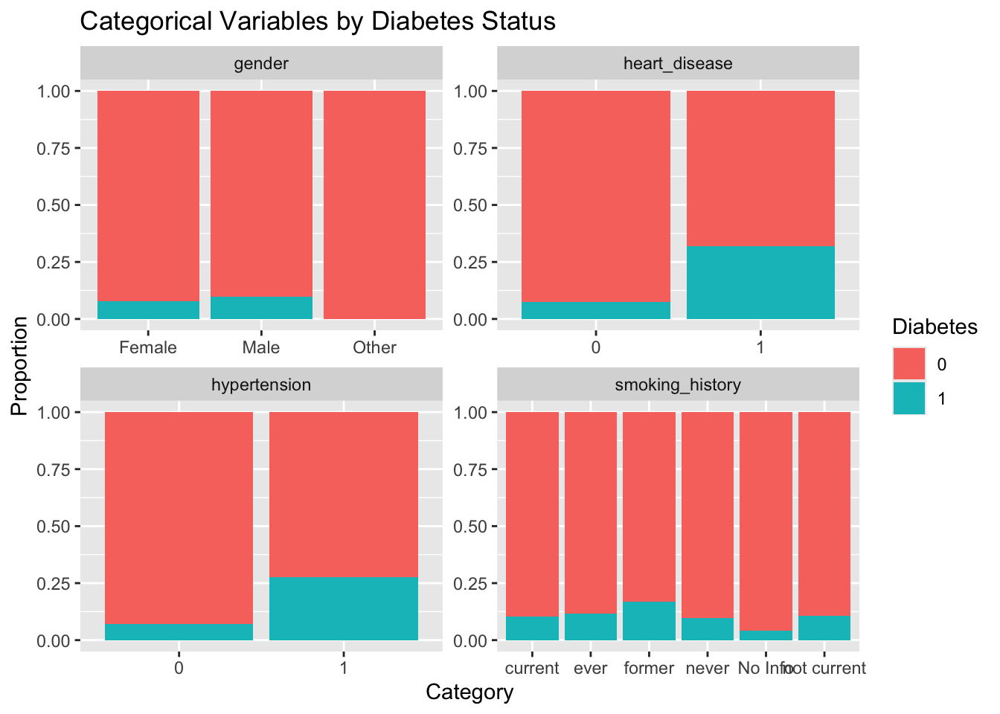

Diabetes has become one of the leading causes of death according to the CDC (National Center for Health Statistics), the goal of this project is to develop a predictive model that determines whether a patient has diabetes based on their medical and demographic information given to us in this data set. Using features such as age, BMI, hypertension, heart disease, smoking history, HbA1c level, and blood glucose level, we will create a model that will find and analyze patterns within the dataset to accurately classify patients as diabetic or non-diabetic. The creation of this model aims to aid in early detection and support informed medical decision-making. This analysis addresses a vital question: Can we use existing patient data to predict diabetes with high accuracy and sensitivity?
Introduction
Diabetes is one of the most common chronic health conditions worldwide, and its growing prevalence continues to place a significant burden on healthcare systems, insurers, and patients alike. In particular, the complications from undiagnosed or poorly managed diabetes can lead to costly hospitalizations and long-term damage to organs, nerves, and blood vessels. As such, early detection is a critical priority—not just for individual patient outcomes but for organizational efficiency and sustainability.
This project applies predictive modeling techniques to address that need. Our goal is to determine whether a patient is likely to have diabetes based on available medical and demographic information. The dataset used in this analysis includes variables commonly assessed in clinical settings, such as age, gender, BMI, hypertension, heart disease, smoking history, HbA1c levels, and blood glucose levels. These features are representative of the data that would typically be accessible to hospitals, outpatient clinics, and insurers managing patient risk profiles.
The primary stakeholder for this analysis is the healthcare industry, which stands to benefit greatly from the integration of predictive models into early screening and triage systems. For hospitals and clinics, this tool could serve as a decision-support system that highlights high-risk patients for further testing or intervention. For insurance companies, accurate risk assessment models can help shape coverage plans, support preventative care programs, and reduce long-term treatment costs. Public health agencies might also use models like this to identify communities with high undiagnosed risk and allocate outreach or education resources accordingly.
Before modeling began, we conducted exploratory data analysis (EDA) to uncover structure, trends, and relationships in the dataset. While the data was generally clean, some minor adjustments were necessary for effective modeling. For example, the smoking history variable was initially split into overlapping or inconsistently labeled categories (e.g., “current,” “ever,” “not current”) that were consolidated into more interpretable groups (e.g., “current,” “former,” “never”). Similarly, categorical variables were encoded into numerical form using dummy variables, and missing values in numeric fields were imputed using median values. These steps ensured compatibility with the machine learning models selected.
The modeling phase explored multiple classification algorithms, including logistic regression and random forest, using cross-validation and hyperparameter tuning to evaluate their performance. Key metrics such as accuracy, precision, recall, and ROC AUC were used to compare models and assess their suitability for real-world deployment.
Ultimately, this project demonstrates how even modest datasets can yield meaningful insights when approached with a thoughtful analytical process. It builds a case for the healthcare industry to continue investing in predictive analytics—not as a replacement for clinical judgment, but as a tool that complements and enhances evidence-based care.
Executive Summary
Exploratory Analysis
Lets take a look at the first 6 rows of our data, and a summary of each of our variables.
Code
data %>% head
# A tibble: 6 × 9
gender age hypertension heart_disease smoking_history bmi hb_a1c_level
<chr> <dbl> <dbl> <dbl> <chr> <dbl> <dbl>
1 Female 80 0 1 never 25.2 6.6
2 Female 54 0 0 No Info 27.3 6.6
3 Male 28 0 0 never 27.3 5.7
4 Female 36 0 0 current 23.4 5
5 Male 76 1 1 current 20.1 4.8
6 Female 20 0 0 never 27.3 6.6
# ℹ 2 more variables: blood_glucose_level <dbl>, diabetes <fct>
Code
data %>% summary
gender age hypertension heart_disease
Length:100000 Min. : 0.08 Min. :0.00000 Min. :0.00000
Class :character 1st Qu.:24.00 1st Qu.:0.00000 1st Qu.:0.00000
Mode :character Median :43.00 Median :0.00000 Median :0.00000
Mean :41.89 Mean :0.07485 Mean :0.03942
3rd Qu.:60.00 3rd Qu.:0.00000 3rd Qu.:0.00000
Max. :80.00 Max. :1.00000 Max. :1.00000
smoking_history bmi hb_a1c_level blood_glucose_level
Length:100000 Min. :10.01 Min. :3.500 Min. : 80.0
Class :character 1st Qu.:23.63 1st Qu.:4.800 1st Qu.:100.0
Mode :character Median :27.32 Median :5.800 Median :140.0
Mean :27.32 Mean :5.528 Mean :138.1
3rd Qu.:29.58 3rd Qu.:6.200 3rd Qu.:159.0
Max. :95.69 Max. :9.000 Max. :300.0
diabetes
0:91500
1: 8500
To gain a better understanding of our numeric variables, we will visualize their distributions.
Code
train %>%pivot_longer(cols =c(age, bmi, hb_a1c_level, blood_glucose_level)) %>%ggplot(aes(x = value)) +geom_histogram(bins =30, fill ="steelblue", color ="white") +facet_wrap(~ name, scales ="free") +labs(title ="Distribution of Numeric Variables")
These histograms give us an initial sense of the data. Age appears roughly normally distributed with an outlier around 80 years old. Blood glucose (BG) levels show a concentration around the normal non-diabetic range (80–120), suggesting that a large portion of patients are near or slightly above this threshold. Given the features present, it’s reasonable to assume this dataset is focused on Type 2 diabetes, as many of the predictors (e.g., age, BMI, blood glucose) are common Type 2 risk factors.
Code
train %>%pivot_longer(cols =c(age, bmi, hb_a1c_level, blood_glucose_level)) %>%ggplot(aes(x =as.factor(diabetes), y = value, fill =as.factor(diabetes))) +geom_boxplot() +facet_wrap(~ name, scales ="free") +labs(x ="Diabetes", y ="Value", title ="Numeric Variables by Diabetes Status")
Box plots give us more targeted insights. Patients with diabetes tend to cluster around age 60, and as expected, higher blood glucose and HbA1c levels are strongly associated with diabetes. This aligns with the medical definitions of diabetes, reinforcing the relevance of these variables.
Code
ggplot(train, aes(x = age, y = hb_a1c_level, color = diabetes)) +geom_point(alpha =0.5) +facet_wrap(~ hypertension) +labs(title ="HbA1c vs Age by Hypertension and Diabetes Status")
This scatterplot highlights interactions between hypertension and diabetes. Notably, patients with hypertension and HbA1c levels between 5 and 7 are more likely to be diabetic. It also shows that most hypertensive patients are over 20, suggesting age and hypertension often go hand in hand.
Code
train %>%mutate(across(c(hypertension, heart_disease, smoking_history), as.character)) %>%pivot_longer(cols =c(gender, hypertension, heart_disease, smoking_history)) %>%ggplot(aes(x = value, fill =as.factor(diabetes))) +geom_bar(position ="fill") +facet_wrap(~ name, scales ="free") +labs(x ="Category", y ="Proportion", fill ="Diabetes", title ="Categorical Variables by Diabetes Status")

Each panel in this plot displays a bar chart showing the distribution of diabetic and non-diabetic patients within each category of the variable. The use of geom_bar(position = “fill”) allows for direct comparison of proportions within each group. Based on these plots we are able to see that the proportion of diabetic and non-diabetic does not vary strongly between genders, which tells us that it might not need to be a feature in our model building. However we are able to see that heart disease and hypertension do have a strong correlation with a diabetes diagnosis. Smoking history, we can now see is split up in an awkward way that makes it hard to decifer any patterns. We will mutate the smoking history variable to be more readable.
Now that that variable is changed to be more readable we will check its correlation with diabetes.
Code
train %>%ggplot(aes(x = smoking_history, fill =as.factor(diabetes))) +geom_bar(position ="fill") +labs(x ="Smoking History",y ="Proportion",fill ="Diabetes",title ="Proportion of Diabetes Status by Smoking History" ) +theme_minimal()
Now we can see from this bar graph that there is a slight increase in diabetes diagnoses in people who have previously smoked or are current smokers. However it doesn’t feel like a strong enough difference to make this a feature in our model.
Warning: There was 1 warning in `summarise()`.
ℹ In argument: `across(...)`.
ℹ In group 1: `diabetes = 0`.
Caused by warning:
! The `...` argument of `across()` is deprecated as of dplyr 1.1.0.
Supply arguments directly to `.fns` through an anonymous function instead.
# Previously
across(a:b, mean, na.rm = TRUE)
# Now
across(a:b, \(x) mean(x, na.rm = TRUE))
From splitting the numeric data and finding the mean for each variable dependent on diabetes or not, we are able to see some key differences. We can see that the average age range differs about 20 years which is a large enough gap to consider it as a factor to diagnosis. Then we go to bmi, which if diabetic averages around 31.9, which according to the American Society of Metabolic and Bariatric Surgery is considered obesity, which is a major risk factor for Type 2 diabetes. This tells us that it would be a significant feature for our model. Same can be said for Hb A1c levels and blood glucose levels, there is a significant jump in A1c and blood glucose for diabetics compared to non-diabetics.
Code
tree <-rpart(diabetes ~ ., data = train, method ="class")rpart.plot::rpart.plot(tree)
This quick decision tree tells us a lot. HbA1c is the root split — meaning it’s the most decisive feature for classifying diabetes in this data. Blood glucose only becomes influential when HbA1c is under 6.7, highlighting a strong interaction between these variables.
Based on the exploratory data analysis, the most relevant features for predicting diabetes are:
Age and BMI: both show clear separations between diabetic and non-diabetic groups.
HbA1c and blood glucose: clinical markers that strongly define diabetes.
Hypertension and heart disease: show clear associations with diabetes in the data.
Each of these variables will be included in our first predictive model, as they are both statistically and clinically meaningful in identifying individuals at risk for diabetes.
We began our modeling with a simple logistic regression — a natural starting point for a binary classification problem like predicting diabetes. Logistic regression is interpretable, fast, and provides probabilistic outputs that can guide decision-making.
The fitted model showed that all selected predictors were statistically significant, with p-values under 0.05. The interpretation of coefficients reveals, for instance, that for every 1-unit increase in HbA1c, the odds of having diabetes increase by approximately 2.35 times. The presence of hypertension or heart disease increases the odds by about 0.79. These findings align with clinical understanding and affirm that our variable choices are well-suited to the task.
We will now evaluate the model using 10-fold cross-validation.
The average recall was remarkably high at 99.13%, suggesting that our model successfully captures the vast majority of diabetic cases. While promising, this performance raised concerns of potential overfitting — hence our decision to compare it to a more flexible, non-linear model: a random forest.
We implemented a random forest model, well-suited for capturing non-linear relationships and interactions between variables. To enhance performance, we tuned its hyperparameters using cross-validation and parallel processing.
The random forest showed excellent performance with a recall of 1.0 for several configurations — indicating that it identified every diabetic case in the training folds. While this could suggest overfitting, further examination revealed a precision of around 0.97, implying very few false positives. This balance between sensitivity and precision suggests the model is not only effective but also reliable.
We can compare our random forest model with hyperparameter tuning and our logistic regression model with cross validation.
Code
rf_metrics <-collect_metrics(rf_tuned) %>%mutate(model ="Random Forest")log_metrics <-collect_metrics(log_reg_cv_results) %>%mutate(model ="Logistic Regression")all_metrics <-bind_rows(rf_metrics, log_metrics)plot_data <- all_metrics %>%filter(.metric %in%c("accuracy", "recall", "precision", "roc_auc"))ggplot(plot_data, aes(x = model, y = mean, fill = model)) +geom_col(position =position_dodge(width =0.9)) +geom_errorbar(aes(ymin = mean - std_err, ymax = mean + std_err),width =0.2, position =position_dodge(width =0.9)) +facet_wrap(~ .metric, scales ="free_y") +labs(title ="Model Performance with Error Bars (CV Estimates)",y ="Mean Metric (± Standard Error)",x ="Model" ) +theme_minimal() +theme(legend.position ="none")
This visual comparison highlights the strong performance of both models. The random forest has a slight edge across all metrics with low variance, as shown by the short error bars. These findings suggest that while both models are valid for our predictive goal, the random forest may generalize slightly better to unseen data.
We will proceed to test both models on held-out test data.
The final comparison on test data confirms the trend seen during training: the random forest outperforms the logistic regression model across all key metrics. Its ability to handle complex interactions and non-linearities gives it an advantage, making it the more suitable model for our objective — accurately identifying patients at risk of diabetes.
Model Interpretation and Inference
Both models, logistic regression and random forest, demonstrated strong performance, but the random forest model is the preferred choice based on its better predictive metrics. The final random forest model achieved an accuracy of 0.97, indicating that it correctly classified diabetes status 97% of the time. In contrast, the logistic regression model trailed slightly with an accuracy of 0.96.
Where the random forest truly excels is in recall, reaching an impressive 0.999. This means the model successfully identified 99.9% of patients with diabetes. While logistic regression also posted a high recall, the random forest consistently outperformed it across all relevant metrics. In the context of diabetes prediction, recall is especially critical — a missed positive prediction could mean a missed diagnosis, potentially leading to severe health consequences. Thus, the near-perfect recall of the random forest offers an important practical advantage.
Precision also favored the random forest slightly, at 0.97 compared to 0.96 for logistic regression. This suggests that the random forest model is slightly more cautious when predicting diabetes, resulting in fewer false positives. Such precision can help reduce unnecessary follow-up or interventions for patients incorrectly flagged as at risk.
Despite these strong results, it’s essential to acknowledge and account for uncertainty. While cross-validation helps to mitigate overfitting, no model is immune to variability when applied to new, unseen data. Although the standard errors were low across folds — indicating model stability — even small changes in recall or precision could carry meaningful clinical implications. Therefore, recommendations based on this model should be made with an understanding that, despite high overall performance, a small margin of error remains.
In summary, the random forest model not only outperforms logistic regression on key metrics, but it also provides a high level of confidence in its predictions. This makes it a compelling choice for identifying patients at risk of diabetes, especially in high-stakes environments where early detection is vital.